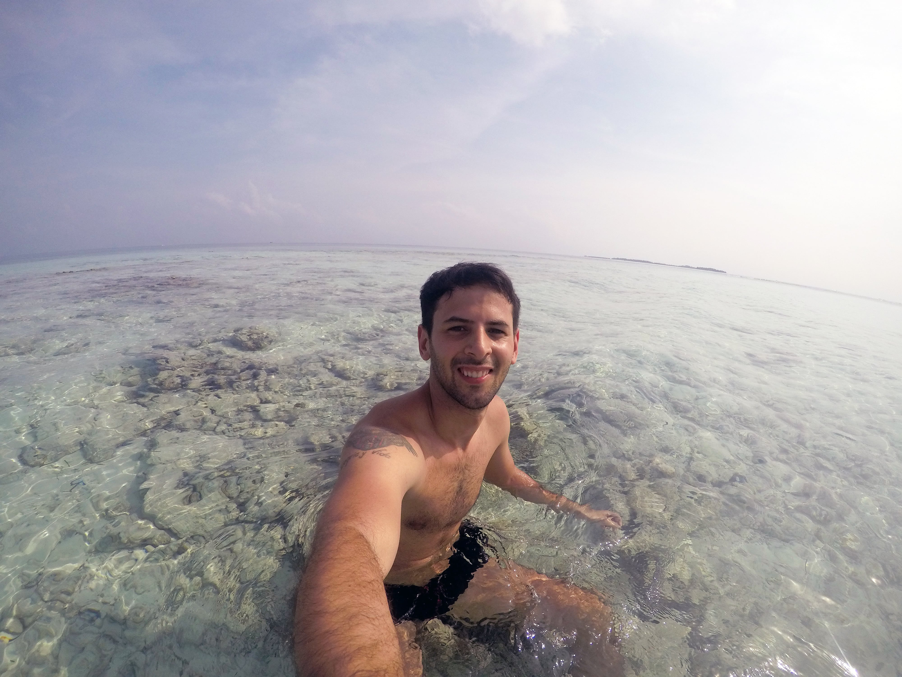
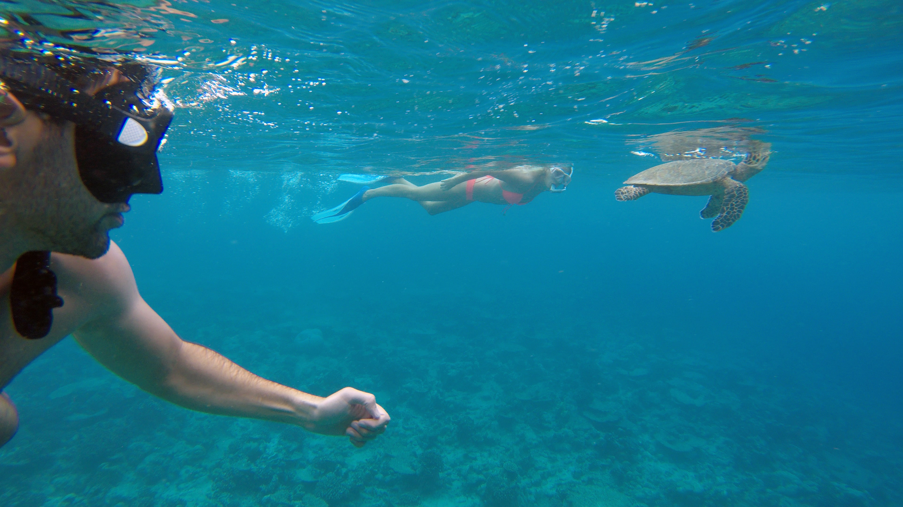
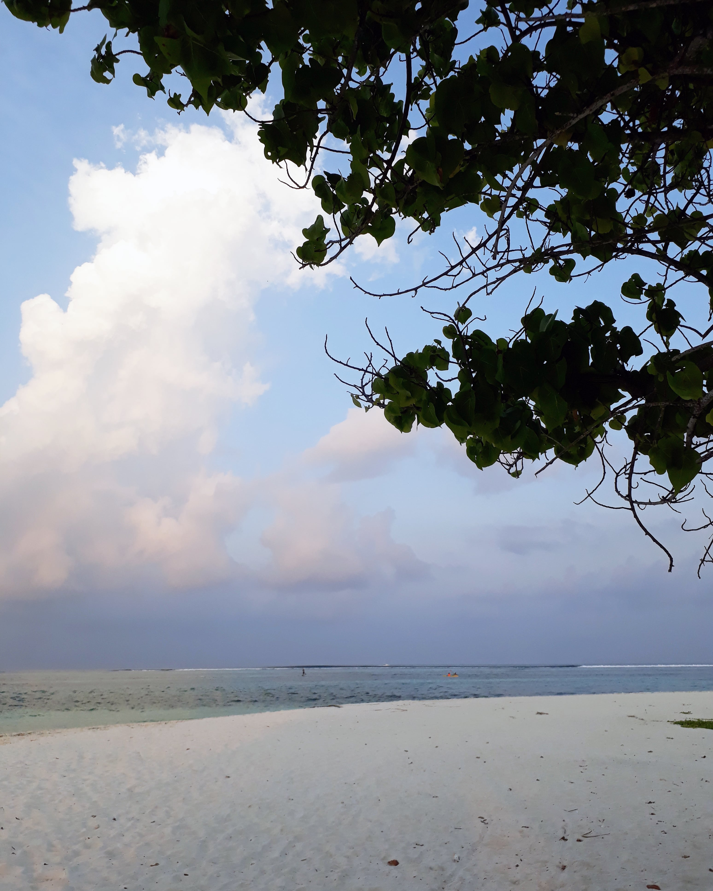
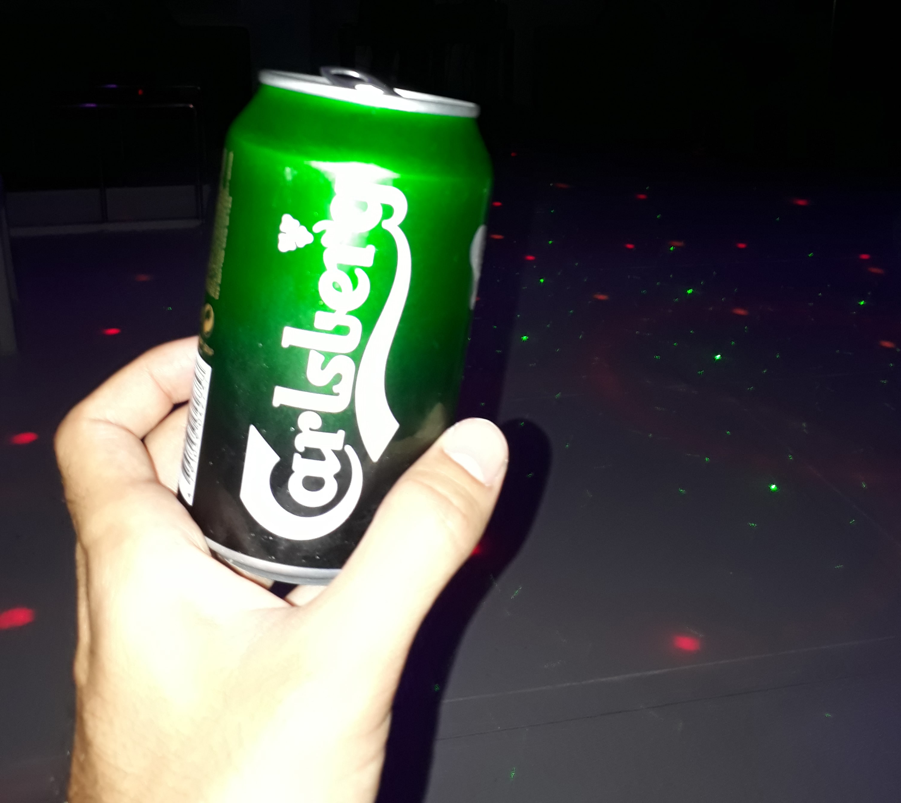
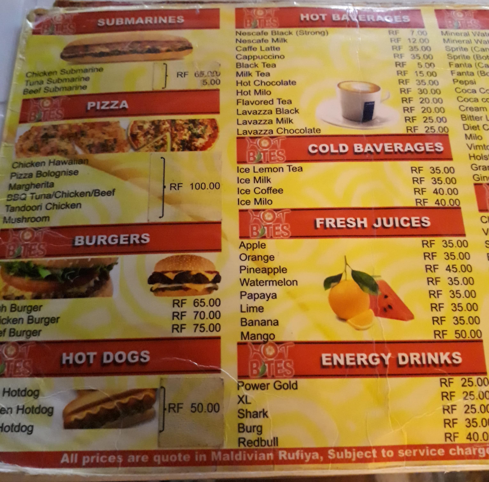

Por Gonzalo Volpe Gómez
Bikini Beach, Maafushi, Maldivas.
El primer día que soñé con conocer las playas del mundo me senté frente a la computadora del trabajo y le pregunte al señor Google cuáles eran las mejores playas del mundo. Las dos primeras fotos que me aparecieron fueron de la Polinesia Francesa y de Maldivas. En ese entonces, sentí la primer frustración, ¿Cómo iba a hacer para llegar a alguno de esos lugares? Me parecía imposible, en las webs decían que son los lugares más caros del mundo, con sus resorts de lujos y playas privadas, que no se puede ni respirar que te cobran. Un sentimiento feo me invadió, no podía ser solo eso, tenía que haber algo más. Con el correr de los años y luego de investigar e investigar llegue a blogs y a personas que contaban su experiencia en la otra cara de Maldivas, en lugares donde la gente local, después de haber insistido al gobierno, lograron montar su propio sistema de hospedaje y actividades turísticas. Esta medida tomada por el gobierno no solo fortaleció a las personas que viven en Maldivas sino también a los turistas que no se sienten cómodos y que no pueden pagar los altos precios de los resorts. En sí, Maldivas tiene muchas islas, algunas que no se encuentran ni habitadas, y en muchas de ellas hay Resorts (en su mayoría uno por isla) que alquilan el terreno al Gobierno y explotan el entorno natural.
Así fue que un 1 de Mayo, junto a dos grandes amigos, Kevin y Tomi, arrivamos al aeropuerto de Malé para cumplir ese sueño tan añorado de conocer el paraíso.
Bikini Beach, Maafushi, Maldivas.
La mejor decisión que tomamos fue ir a Maafushi, una de las islas administradas por locales, donde en unos pocas cuadras convive el turista, la gente de Maldivas, el Islam Sunita, las bikinis y los hijabs. Los maldivos son extremadamente respetuosos y esperan lo mismo de los turistas.
Primero lo primero, hay varias formas de llegar. Una opción es la de un "Scheudle Transfer" que cuesta usd30 por persona y tiene 6 horarios distintos por día. El segundo es un bote privado que cuesta usd220 con espacio máximo para 6 personas. Es decir, si son 6 personas, pueden repartir los usd220 entre todos. Para chequear los precios y horarios actualizados, podés ingresar a AtollTransfer y seleccionar el trayecto "Airport" to "Maafushi". No busquen a Maafushi como resort ya que es una isla con varis hospedajes, por lo tanto, aparece como "Local Island". ¡Ey, Gonzalo, es carísimo! Aguarden, ¿qué pasa si les digo que hay una manera de llegar desde Malé a Maafushi por solo 3usd? Todo depende de nuestra habilidad para poder coordinar los vuelos o la paciencia para esperar la hora de los Ferrys públicos. Lo primero que debemos hacer es tomar el barco desde el aeropuerto a la ciudad de Malé, operan todo el día y cuestan alrededor de 1usd. Otra alternativa es ir en auto, según AtollTransfer el trayecto es de 10 minutos. Una vez en Malé nos tenemos que dirigir a Villingili Ferry Terminal (aproximadamente 15 minutos en auto o 30 caminando) desde allí tenemos la posibilidad de tomar dos barcos hacia Maafushi:
En el siguiente link podrán observar los distintos horarios y combinaciones que realiza MTCC , la empresa encargada de los ferrys en Maldivas. Además clickeando aquí podrán ver un listado de las distintas combinaciones entre islas que pueden hacer.
Nuestro hospedaje fue el Stingray Beach Inn administrado por Ibrahim, una persona muy atenta que respondió con amabilidad a todas las consultas que tuvimos en el hotel y antes de llegar. Las habitaciones son cómodas, sin lujos, pero cumplieron con nuestras expectativas. Pagamos 475usd por 4 noches para 3 con desayuno incluido, que por cierto es exquisito y donde pudimos elegir entre 6 menúes distintos compeltísimos. Además, el hotel provee de equipamiento de snorkel y ofrecen la organización de excursiones.
Los precios y horarios están sujetos a constantes cambios. Te recomiendo que los chequees en las páginas oficiales antes de comenzar tu viaje.
Amanecer en Bikini Beach, Maafushi.
La isla es bastante pequeña y cuenta con dos zonas de playas muy diferenciadas. La primera se denomina Bikini Beach y conforma 3 costas, la otra es la playa de la gente local donde no esta permitido utilizar bikini. Un dato curioso es que la Bikini Beach tiene unos biombos creados por ramas para que los locales no observen lo que sucede, sin embargo, eso es algo que terminó quedando como decoración ya que muchos locales acuden a la Bikini Beach y no se sorprenden si hay mujeres caminando en bikini por el resto de la isla. Mi recomendación, es que respeten las costumbres locales y acudan con la vestimenta adecuada a cada lugar para evitar problemas.
Llegamos a Maafushi a las 00:00hs de un domingo, muy cansados desde Kuala Lumpur, y nos encontramos con un pueblo fantasma, no había casi movimiento y muchas zonas estaban sin iluminar. El agua no se podía apreciar del todo por la oscuridad y mis ansias por que sea lunes a la mañana para poder conocer verdaderamente el paraíso eran enormes. Pensé que me costaría dormir, pero el cansansio me ganó y de repente ya estaba abriendo los ojos nuevamente, era un día nuevo y no cualquier día ¡Nuestro primer día en Maldivas! Comimos un desayuno ríquisimo y Kevin y Tomi dijeron que se iban a preparar para la playa, a bañar y demás. Imagínense, yo no podía esperar ni un segundo más, agarre mi mochila con lo que tenía y encaré para la playa. Después de hacer menos de 3 cuadras me encontraba enfrente al biombo de ramas y al cruzarlo sucedió todo lo que esperaba, el agua era tan cristalina que mi mente jamás se la hubiera podido imaginar y la playa estaba desierta, toda para mi solo. El sol acompañaba y desde la orilla podía ver todo tipo de peces. Me adentre al mar sin dudar un segundo, caminé con mi cámara, anodadado, la expresión de mi cara era una mezcla de felicidad suprema y de no poder creer donde estaba. Salte, nade, hice videos, saque fotos y hasta me pelie con un pececito que indiscriminadamente me quería morder al verme tranquilo sentado en una roca con el agua al pecho. ¡Maldito pez no me importa que me muerdas estoy en el paraíso!
Descubriendo la vida marina de Maldivas.
Al rato, empezó a llegar gente, entre ellos Kevin y Tomi. Recuerdo haber mirado a Tomi con cara de sorpresa y decirnos: "Es increíble esto, mira donde estamos". Luego, Kevin encaró para el agua y de repente nos empezó a hacer gestos con las manos para que vayamos donde estaba, había encontrado una raya bebe muy cerca de la costa, donde el agua pasaba apenas las rodillas, algo magnífico. Pero no fue todo, ese día al atardecer, mientras nos estábamos dando un baño de relax percibimos un movimiento extraño muy cerca nuestro pero no pudimos distinguir que era. Hasta que de repente una figura se empezó a acercar más y más, y pudimos ver una raya de un tamaño enorme. Les confieso, un poco de susto me entró. Pero Maldivas tiene eso, te permite apreciar los animales de una manera tan cercana y en un mar tan transparente que te sentís inmerso en un programa de National Geographic.
Mis dos principales recomendaciones es que compren zapatos de goma (hay muchísimas rocas y corales en las playas) y que se animen a adentrarse en el mar que es verdaderamente calmo y a tan solo unos metros de la costa ofrece una bajada muy pronunciada ideal para hacer snorkel y observar un montón de especies marinas.
La playa de los locales contiene una belleza única, una paz que se hace sentir apenas nos adentramos en la costa. Se encuentra al lado de una canchita de fútbol donde al caer la tarde se juntan a jugar los maldivos y hacen rodar la bocha. Muy cerca, hay también un barquito abandonado en la arena que de noche se transforma en el escenario perfecto para que filmen su propia película de terror.
Playa local, Maafushi, Maldivas.
Acá esta la pregunta que muchos están esperando ¿Tiene vida nocturna Maafushi? La respuesta es sí y para gustos variados. En los días que estuvimos, disfrutamos muchísimo de un concepto de noche distinto al que estamos acostumbrado y sobre todo al que vivimos en algunas islas de Tailandia como Phi Phi.
Vamos a lo concreto y a lo que le interesa a muchas personas que no van en plan de familia ni de luna de miel. ¿Se vende alcohol en la isla? Lo cierto es que en la isla no venden alcohol, pero hay dos barcos ubicados en aguas internacionales en donde podemos beber. ¿Pero hay fiesta? Nosotros coordinamos con un joven de Maafushi en la playa para ir una noche al Kaani Princess. Él chico nos prometió que harían una noche Latina si concurríamos y aceptamos. La dinámica fue fácil, coordinamos un horario para que nos reciban en el muelle y nos llevaron gratis hasta el barco. Estabamos expectantes, al llegar al Kaani Princess, nos dirigimos al segundo piso donde había unas mesas y una pista de baile con un DJ local. Al vernos entrar pusieron una música latina un tanto vieja, pero la intención lo fue todo y no solo eso, sino que el DJ nos dejó poner a nosotros mismos música, así que el reaggeton y la cumbia se adueñaron de Maldivas.
Una cervecita antes de que el bar del Kaani Princess se haga pista de baile.
Un momento inolvidable, gente de distintas nacionalidades, rusos, españoles, maldivos, argentinos, todos coincidimos en un noche única donde la luna y las estrellas eran solamente para nosotros y mientras bailabamos y tomabamos cervezas pudimos ver peces, rayas y todo tipo de animales acuáticos nadando muy cerca. Eso si, es difícil bailar con el movimiento del barco y más después de unas birras jaja. El costo de la cerveza era de 6usd la lata (95 pesos argentinos), un poco más caro que la media de los bares en Argentina, pero barato para el contexto de encontrarse en un lugar donde no se toma alcohol. ¡Ojala que cuando vayan puedan disfrutar una noche así! Luego del barco, que finaliza aproximadamente entre las 12:00hs y la 1:00hs (hay que ir temprano), decidimos ir a la Bikini Beach. Les recomiendo, aunque les de miedo por las rayas que puedan estar en la costa, que pasen una noche en la playa y se bañen en sus aguas. Es un lugar de película, con aguas cálidas, la luz necesaria y el cielo solo para ustedes.
¿Qué otras alternativas hay? La isla de día es un paraíso natural, por la noche, se transforma en el lugar perfecto para caminar y perderse en sus calles. Una de las noches decidimos caminar toda la isla y nos sentimos verdaderamente en una película de terror, lugares con poca luz, el cementerio, la prisión de Maafushi, la gente local andando en moto una y otra vez por la misma zona como si fueran fantasmas, un conjunto de cosas que le da un misticismo a la noche en la isla. Lo cierto, es que la isla es muy tranquila y no hay riesgo de que te suceda absolutamente nada. ¡Así que aventurensen playeros!
Mi idea es darles un pantallazo general de los precios en Maafushi, para que sepan con que se pueden encontrar. Si bien, los precios mutan con el correr del tiempo, se pueden llegar a dar una idea de lo que salen las cosas. Antes de ir, consulte a gente local y me explicaron que el monto de almuerzo/cena es de entre 10usd a 20usd por persona. Un monto real que corroboramos al llegar a la isla. Hay que terminar con la mentira de los lugares impagables, los montos en Maafushi son similares a los de Buenos Aires. Por ejemplo, en el Stingray Beach Inn pudimos almorzar los 3 por 600 rupias (38usd aproximadamente o 592 pesos argentinos) incluyendo postre y bebida. El menú fue un plato de langostinos, otro de pescado con papas y un sanguche. De postre, frutas y helado para los 3.
Precios en Hot Bites, Maafushi, Maldivas.
Una recomendación buena y barata es el restaurante Hot Bites, donde comimos los 3 por 392 rupias (25usd). Esa noche disfrutamos de 2 hamburguesas (70 rupias cada una) y 1 pescado con papas (70 rupias). De este lugar, además, les aconsejo que prueben los waffles con helado, un verdadero acierto, el monto es aproximadamente de 60 rupias. Comprar unas galletitas o masitas en el supermercado cuesta alrededor de 30 rupias.
Acá esta la pregunta que muchos están esperando ¿Tiene vida nocturna Maafushi? La respuesta es sí y para gustos variados. En los días que estuvimos, disfrutamos muchísimo de un concepto de noche distinto al que estamos acostumbrado y sobre todo al que vivimos en algunas islas de Tailandia como Phi Phi.
*Abajo podrán ver los precios de las excursiones.
Uno de mis principales sueños del viaje era poder nadar junto con el tiburón ballena, un anhelo que no pude cumplir en la Riviera Maya debido a su alto costo. El primer día que llegamos nos brindaron un folleto que decía "Nada con el tiburón ballena" le manifesté a Ibrahim que quería hacer esa excursión y él me coordino todo. Para mi sorpresa y después de que le insistí un poco, se sumo Kevin. Pagamos 100 usd cada uno y nos subimos a un barquito acompañados por muchos turistas vietnamitas y una española. Tras una hora de búsqueda no habíamos podido divisar al tiburón ballena y los tripulantes del barquito nos dijeron que estemos tranquilos que tenían tiempo para buscarlo y que siempre aparecía.
Pasaron dos horas más y el aburrimiento en el barco era muy grande, la gente se dormía literalmente. El tiburón ballena no apareció, la promesa del folleto era mentira. Me molesto mucho el engaño, el vender un fenómeno natural como algo seguro, lo cual es imposible. Y además, nos dijeron que íbamos a comer en un banco de arena y tampoco lo hicimos. Nos dejaron haciendo snorkel en una caleta donde vimos muchos peces y una tortuga hermosa, pero mi sentimiento fue y es de vacío. Espero que si están por allí y deciden hacer la excursión, tengan más suerte. Obviamente hicimos el descargo acusando "publicidad engañosa" y no nos devolvieron ni un centavo, ni tampoco nos hicieron descuento en otras excursiones lo cual me enojó aún mas. Me sentí totalmente descuidado como turista y con muy poco interés por parte de la gente del tour (contactada por el Hotel) por remediar el mal momento de la excursión fallida.
Sin embargo, al otro día realizamos la excursión a la Isla de Vaadhoo que fue un acierto total y el día antes de irnos un tour en donde nos llevaron a ver tortugas y delfines por 25 usd. Una experiencia muy buena donde nos dejaron nadar con las tortugas y donde desde el barco observamos una cantidad incontable de delfines muy cerca nuestro. Finalizamos la excursión almorzando en un banco de arena con una vista increíble.
Mi recomendación es que al menos conozcan un banco de arena y que aprovechen los tours de snorkel, que suelen ser baratos (alrededor de 20usd), y donde podrán ver muchísimas especies marinas, rayas, tortugas, delfines y si tienen suerte hasta tiburones.
CATÁLOGO Y PRECIOS EXURCIONES DE SNORKEL CATÁLOGO Y PRECIOS EXURCIONES DE RESORTS CATÁLOGO Y PRECIOS EXURCIONES DAYTRIPEs posible que los precios hayan variado. Te recomiendo que chequees los precios actualizados directamente con tu hospedaje o con Stingray Beach Inn.